By Irina Khan, September 28, 2026
Overview
This assignment describes the analytical and numerical methods used to fit an equation to a set of points.
Table of Contents
- Handwritten Analytical Solution - Fitting to a Line
- Handwritten Analytical Solution - Fitting to a Parabola
- Handwritten Numerical Method: Fitting to a Line
- Handwritten Numerical Method: Fitting to a Parabola
- Python Script Implementation of Line Fitting
- Python Script Implementation of Parabola Fitting
NOTE: The regular Newton-Raphson multivariate algorithm was used for Part 2 INSTEAD of 'optimizing for each parameter individually in each iteration step'. This is due to the professor clarifying that we should use the original Newton-Raphson multivariate algorithm in class on Monday, September 28, 2026.
Hand-worked Solution of Line Fitting via Analytical Method
The following images are screenshots of my hand-solved solution to fitting a line to the points stated in the assignment document. [(0, 0.5), (2, 3.5), (1, 1.5), (3, 7.5)]
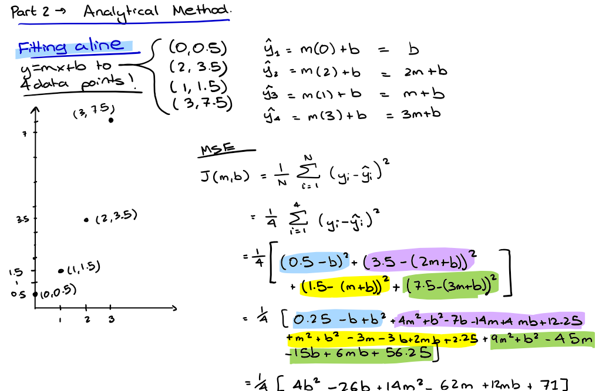
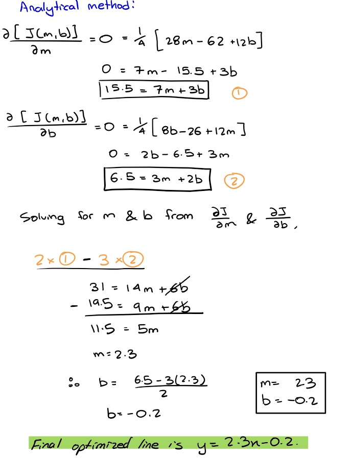
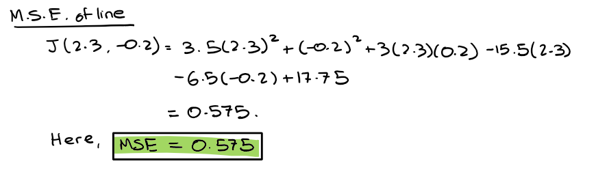
As seen in the handwritten solution above, the MSE for the line is 0.575. Compared to the MSE of the parabola found in the next solution, it is clear that the line does not fit the points of the dataset well.
Hand-worked Solution of Parabola Fitting via Analytical Method
The following images are screenshots of my hand-solved solution to fitting a parabola to the points stated in the assignment document. [(0, 0.5), (2, 3.5), (1, 1.5), (3, 7.5)]
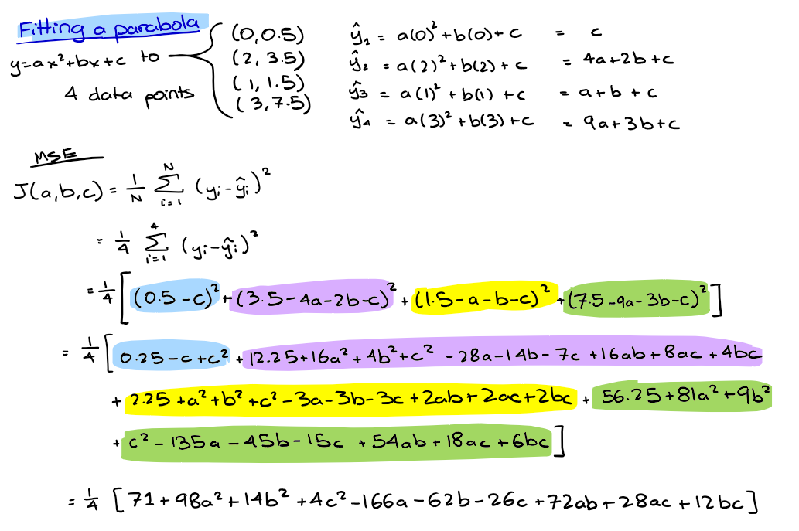
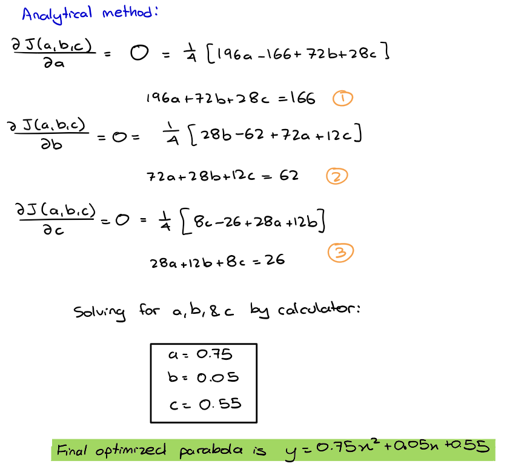
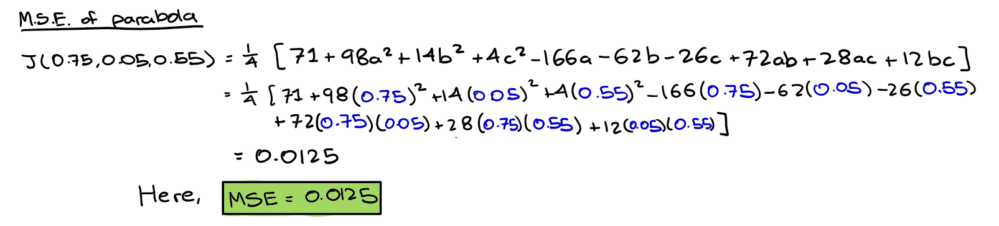
As seen in the handwritten solution above, the MSE for the line is 0.0125. Compared to the MSE of the line found in the earlier solution, it is clear that the parabola fits the points of the dataset very closely, since the value of MSE is very close to zero, indicating that the error between the predicted model output and the dataset labels are minimal.
Hand-worked Solution of Line Fitting via the Newton-Raphson Multivariate Method
The following images are screenshots of my hand-solved application of the Newton-Raphson Multivariate algorithm in order to fit a line to the points stated in the assignment document. [(0, 0.5), (2, 3.5), (1, 1.5), (3, 7.5)]
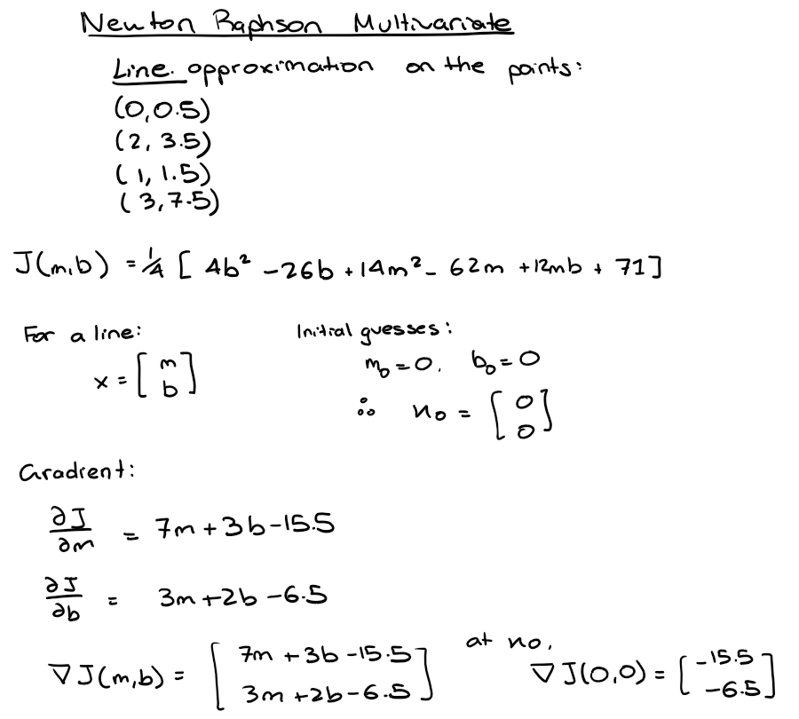
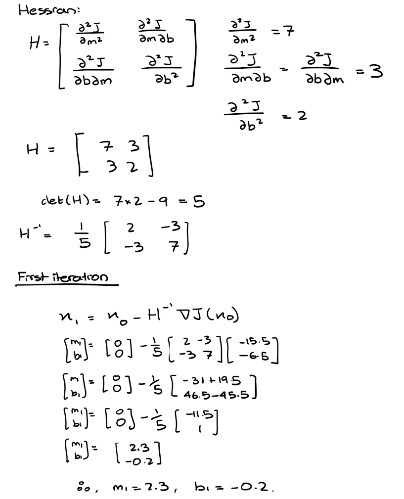
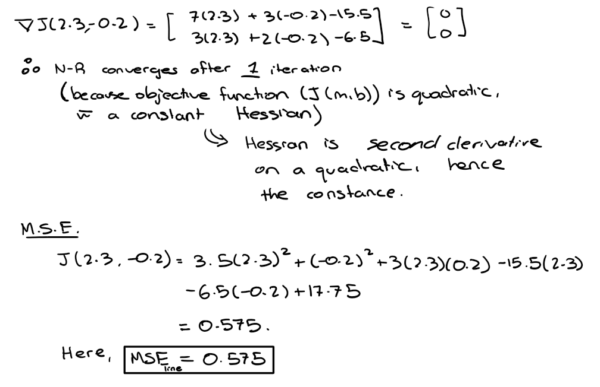
The optimized parameters m* and b* are the same as the parameters calculated in the analytical method, where m* is 0.23, and b* is -0.2. The MSE of the line also matches the analytical method's MSE value, proving that the NR-Multivariate method correctly converged after only 1 iteration.
Hand-worked Solution of Parabola Fitting via the Newton-Raphson Multivariate Method
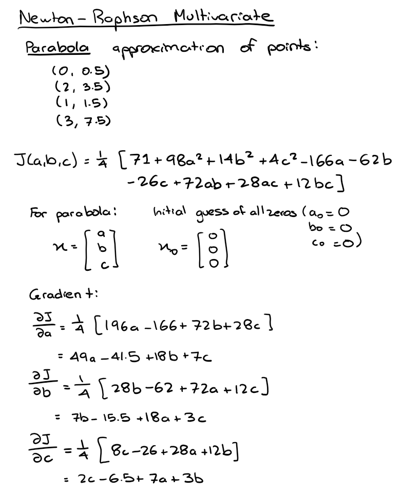
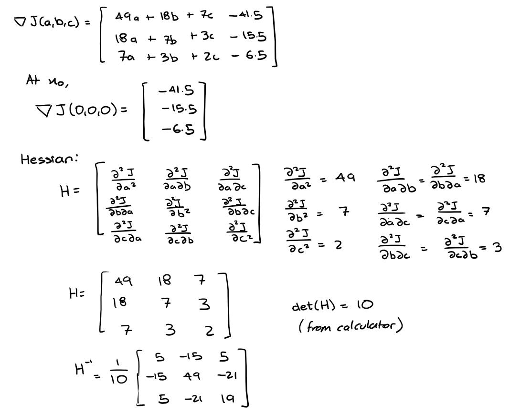
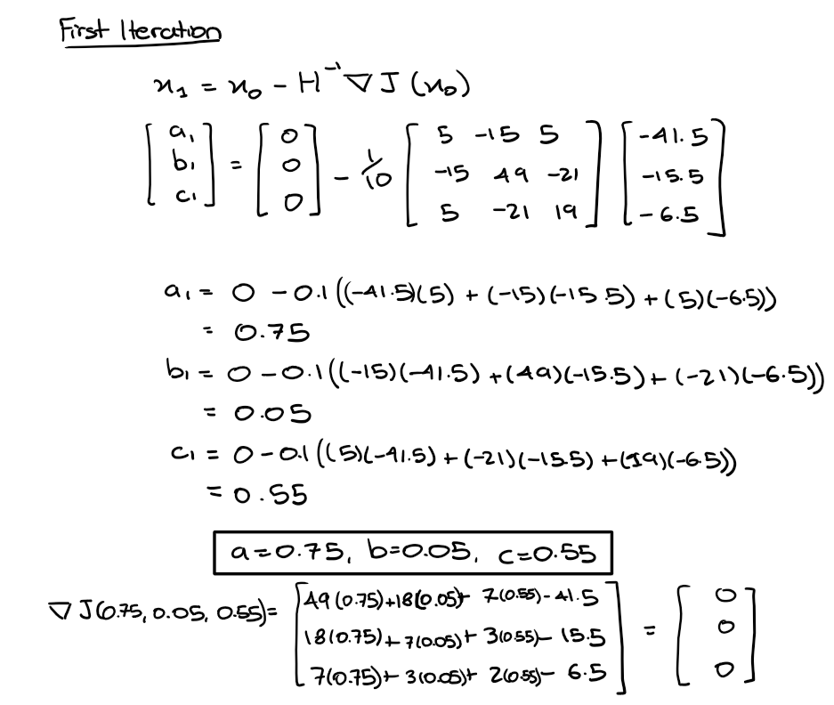
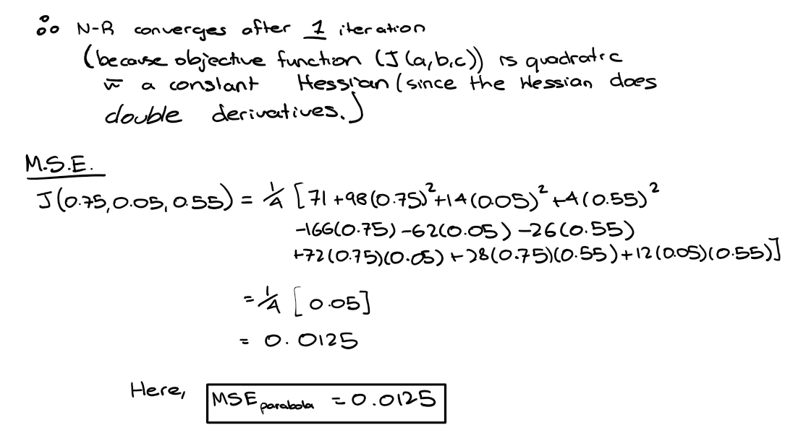
The optimized parameters m* and b* are the same as the parameters calculated in the analytical method, where a* is 0.75, b* is 0.05, and c* is 0.55. The MSE of the line also matches the analytical method's MSE value, proving that the NR-Multivariate method correctly converged after only 1 iteration.
Python Script Implementation of Line Fitting
The Newton-Raphson Multivariate Method was used with initial guesses of m0 and b0 being 0 and 0.
The objective function is the Minimum Square Error equation, or the MSE, which is written as:
$$ J(m,b) = \frac{1}{N} \sum_{i=1}^{N} (y_i - \hat{y_i})^2 $$
Here, N is the number of points in the dataset [(x1, y1), ..., (xn, yn)]. For the equation format of y = mx + b,
the MSE equation can be written as:
$$ J(m,b) = \frac{1}{N} \sum_{i=1}^{N} (y_i - (m \cdot x_i + b))^2 $$
Since the objective function is only a quadratic equation, and the equation of the Newton-Raphson Multivariate requires
the gradient of the objective function and the Hessian (which is a second derivative operation), the Hessian is a constant value.
This results in the optimization of the m* and b* values to occur in one iteration.
The python script that automates the Newton-Raphson Multivariate algorithm (plus plotting the intermediate functions) can be found
on the Assignment 1 Part 2 code page.
The intermediate plot below shows the first line generated from the initial guesses of m0 = 0 and b0 = 0, and the final line,
where
$$ m^* = 0.23 $$
$$ b^* = -0.2 $$
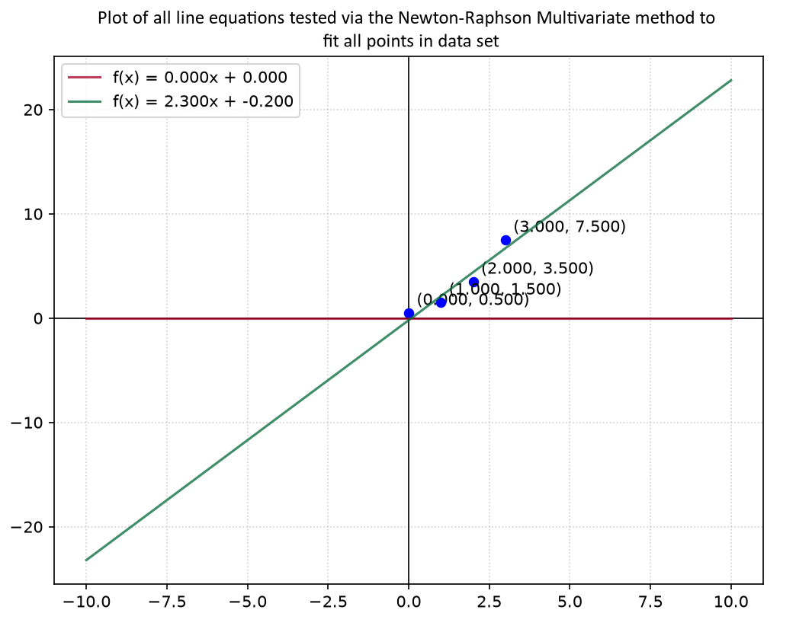
As stated earlier in the handwritten sections of this report, the optimized line equation does not visually fit the 4 points well, which aligns with the final MSE value calculated for this line fitting. (MSE of the line = 0.575)
Python Script Implementation of Parabola Fitting
The Newton-Raphson Multivariate Method was used with initial guesses of a0, b0, and c0 all being set to 1,
so that an initial parabola can be seen in the 'intermediate plot' posted below.
The objective function is the Minimum Square Error equation, or the MSE, which is written as:
$$ J(m,b) = \frac{1}{N} \sum_{i=1}^{N} (y_i - \hat{y_i})^2 $$
Here, N is the number of points in the dataset [(x1, y1), ..., (xn, yn)]. For the equation format of y = ax^2 + bx + c,
the MSE equation can be written as:
$$ J(m,b) = \frac{1}{N} \sum_{i=1}^{N} (y_i - (a \cdot x_i^2 + b \cdot c_i + c))^2 $$
Since the objective function is, once again, only a quadratic equation, and the equation of the Newton-Raphson Multivariate requires
the gradient of the objective function and the Hessian (which is a second derivative operation), the Hessian is a constant value.
This results in the optimization of all the parameters (a*, b*, c*) to occur in one iteration.
The python script that automates the Newton-Raphson Multivariate algorithm (plus plotting the intermediate functions) can be found
on the Assignment 1 Part 2 code page.
The intermediate plot below shows the first line generated from the initial guesses of a0 = 1, b0 = 1, and c0 = 1, and the final line,
where
$$a^* = 0.75$$
$$b^* = 0.05$$
$$c^* = 0.55$$
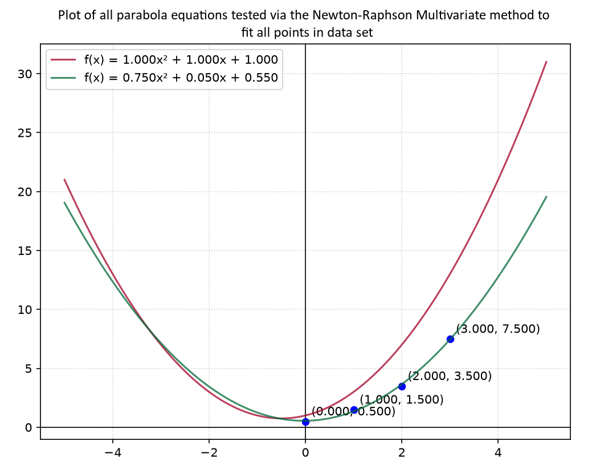
As stated earlier in the handwritten sections of this report, the optimized parabolic equation fits the 4 points very well, which aligns with the low MSE value calculated for this parabolic fitting. (MSE of the parabola = 0.0125)